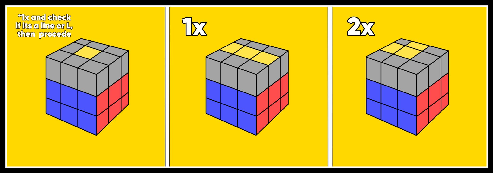

The Tutorial
In solving a Rubik's cube, often referred to as "cube" or "speedcube", you may encounter many methods, such as CFOP, Roux, ZZ, or Petrus; each of the methods making you have to memorize many different "algorithms", or set of moves. But in this tutorial, we will be using the beginner method, which only requires 5 simple algorithms that are easy to memorize.
1. The White Cross
The first step to solve the Rubik's cube is to solve the white cross. In the beginner method, this can be done by forming the daisy; 4 white "edge" pieces around a yellow center. Any center and edge color of the opposite side can also work.
Once you have your daisy, look at the white edges. Look at the second color of the edge. If, for example, the secondary color is red, twist the top layer until it matches with its center; in this case red. Lastly, Twist the face with the matching edge and center 180 degrees so that the white edge is with the white center. Repeat this with all white edges until you have your cross.
2. Aligning the White Corners & Edges


The next step in solving the Rubik's Cube is to complete the white face by inserting the corner by moving it on top of its correct spot and using the moves ( R U R' U' ) to insert it into the slot. If the corner is already in another slot or is mis-aligned, take it out using the same set of moves that you use to put the corner back in and procede as normal.
To the top-left is a chart of how many times you would have to perform the algorithm in order to in order to insert the corner. If the white sticker faces the right, only perform the algorithm once. If it faces the top, do it three times.
In the bottom-left shows the algorithm used to insert the edges into the slot. The example shows that we need to somehow shove the blue-red edge piece in-between the blue and red centres. How do we do it? If the edge is already in another slot, ignore it and do the other slots. If you're edge is on the top face, check to see the bottom color of the edge (primary), which is blue in this case. Next, twist the top face until the two colors match. Next, we see the color on top of the edge (secondary), in this case red. Now, push the edge away from the secondary (red case currently). If it is a U move like the first move of the bottom chart, perform the normal right hand algorithm, turn the cube to the right, then do the left hand algorithm. If the move to push the centre away from the second color is a U', then do the mirrored version (U' L' U' L U (y') R U R'). If the edge is in the correct spot but mis-alligned, take it out
3. The Yellow Cross
Making the yellow cross is one of the easiest steps in this entire tutorial, as there are only three possible outcomes for the edges in begginner method. If two edge pieces and the center piece make a line on the top (middle example), rotate the top face until the line is horizontal, then rotate the face that faces you clockwise (F), then do the short right hand algorithm we have used countless times (R U R' U') once [F + Right Short Alg = fix for yellow cross]. If the two edge pieces instead make an "L" shape (last example), twist the top face until the "L" is flipped like in the example, then perform the same moves as before two times ((F) R U R' U'). *If the only yellow piece facing the top that isn't a corner the centre piece, do the algorithm used to fix the yellow cross once, then do the algorithm either once or twice depending on if its a line or an L.
4. Alligning the Yellow Edges
Now that you have your yellow cross, its time to align the secondary colors of the cross with their respective centers. This can be done easily using a simple algorithm.
If the situation is like the top image, where to edges, in our case blue and orange, ar next to each other, perform the algorithm ( R U R' U R U2 R' ).
If the situation is like the bottom example where the mis-placed edges are on opposite sides, turn the whole cube into a position where the mis-placed edges are on left and right, do the algorithm, then procede to do the steps for the edges that are now parralel to each other.
5. Fix the Corners and Solve
Finally, we are almost done learning how to solve this not-so-tricky puzzle. The next step on our list is to put the corners back into the right place. If they are already solved, you can skip ahead to the next paragraph. If none of the corners are in the correct place, perform the algorithm ( U R U' L' U R' U' L ). If there is one corner in the correct place, twisted or not, turn the cube so the corner is on the top right and do the same algorithm that you would do if there are no correct corners.
Lastly, once all the corners are in the right spot, flip the cube upside-down to that the white center is on top, making sure that one of the un-solved corners is onn the bottom left, and repeat the right hand short algorithm (sexy move) until the yellow part of the corner is facing down. Once finnished do not turn the whole cube to move on to the next corner, as it may or may not ruin your solve; instead, only twist the bottom layer. Keep doing this until all the corners are solved. Congratulations, You have solved the Rubik's Cube! Give yourself a round of applause.